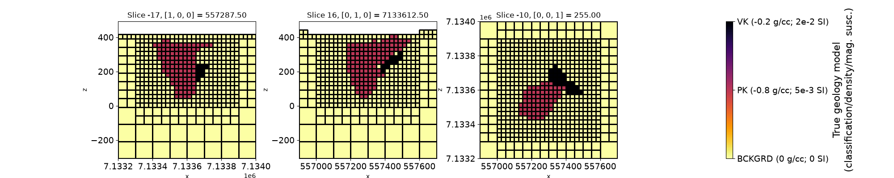
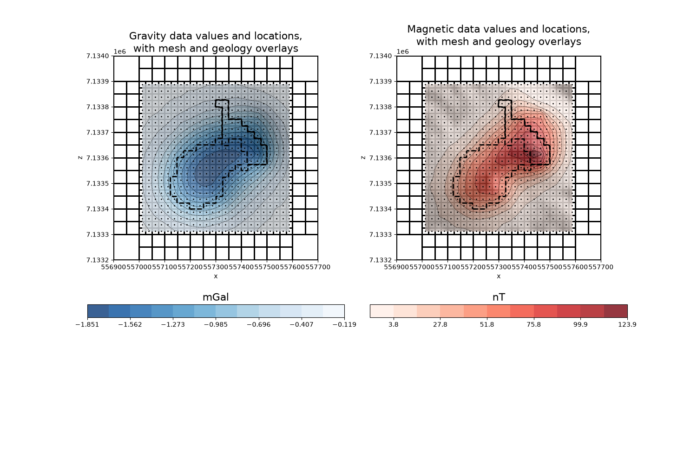
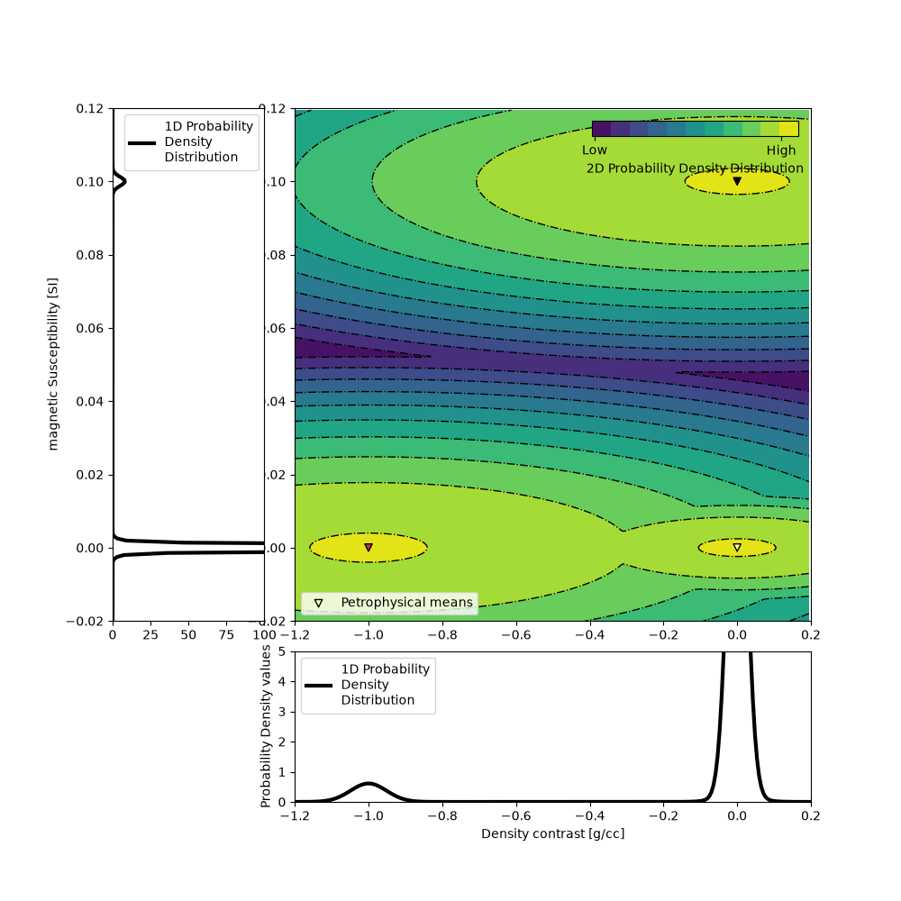
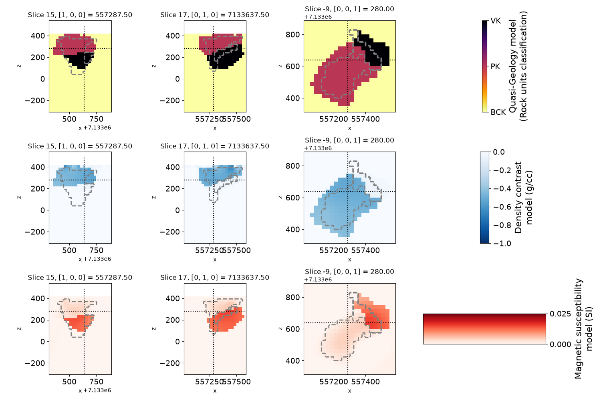
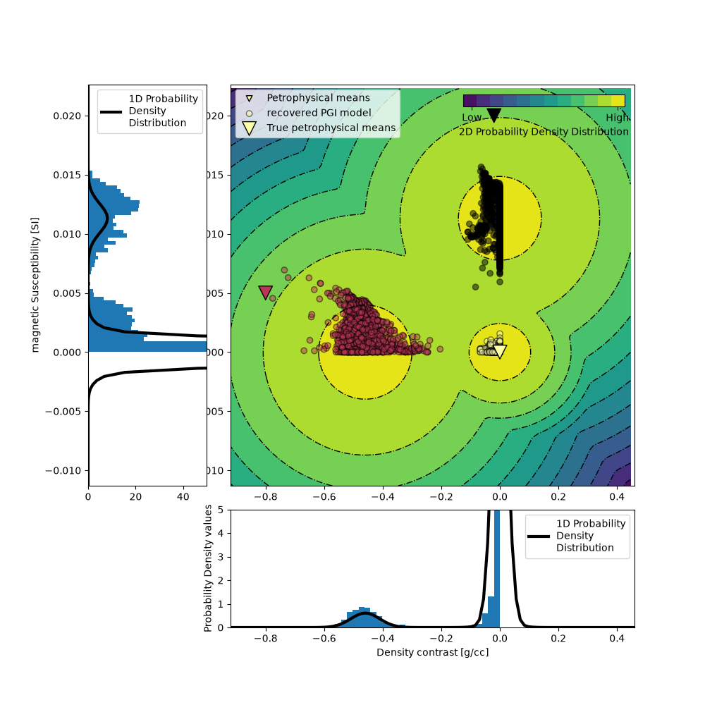

Note
Go to the end to download the full example code.
Joint PGI of Gravity + Magnetic on an Octree mesh without petrophysical information#
This tutorial shows through a joint inversion of Gravity and Magnetic data on an Octree mesh how to use the PGI framework introduced in Astic & Oldenburg (2019) and Astic et al. (2021) to make geologic assumptions and learn a suitable petrophysical distribution when no quantitative petrophysical information is available.
Thibaut Astic, Douglas W. Oldenburg, A framework for petrophysically and geologically guided geophysical inversion using a dynamic Gaussian mixture model prior, Geophysical Journal International, Volume 219, Issue 3, December 2019, Pages 1989–2012, DOI: 10.1093/gji/ggz389.
Thibaut Astic, Lindsey J. Heagy, Douglas W Oldenburg, Petrophysically and geologically guided multi-physics inversion using a dynamic Gaussian mixture model, Geophysical Journal International, Volume 224, Issue 1, January 2021, Pages 40-68, DOI: 10.1093/gji/ggaa378.
Import modules#
from discretize import TreeMesh
from discretize.utils import active_from_xyz
import matplotlib.pyplot as plt
import numpy as np
import simpeg.potential_fields as pf
from simpeg import (
data_misfit,
directives,
inverse_problem,
inversion,
maps,
optimization,
regularization,
utils,
)
from simpeg.utils import io_utils
# Reproducible science
np.random.seed(518936)
Setup#
# Load Mesh
mesh_file = io_utils.download(
"https://storage.googleapis.com/simpeg/pgi_tutorial_assets/mesh_tutorial.ubc"
)
mesh = TreeMesh.read_UBC(mesh_file)
# Load True geological model for comparison with inversion result
true_geology_file = io_utils.download(
"https://storage.googleapis.com/simpeg/pgi_tutorial_assets/geology_true.mod"
)
true_geology = mesh.read_model_UBC(true_geology_file)
# Plot true geology model
fig, ax = plt.subplots(1, 4, figsize=(20, 4))
ticksize, labelsize = 14, 16
for _, axx in enumerate(ax):
axx.set_aspect(1)
axx.tick_params(labelsize=ticksize)
mesh.plot_slice(
true_geology,
normal="X",
ax=ax[0],
ind=-17,
clim=[0, 2],
pcolor_opts={"cmap": "inferno_r"},
grid=True,
)
mesh.plot_slice(
true_geology,
normal="Y",
ax=ax[1],
clim=[0, 2],
pcolor_opts={"cmap": "inferno_r"},
grid=True,
)
geoplot = mesh.plot_slice(
true_geology,
normal="Z",
ax=ax[2],
clim=[0, 2],
ind=-10,
pcolor_opts={"cmap": "inferno_r"},
grid=True,
)
geocb = plt.colorbar(geoplot[0], cax=ax[3], ticks=[0, 1, 2])
geocb.set_label(
"True geology model\n(classification/density/mag. susc.)", fontsize=labelsize
)
geocb.set_ticklabels(
["BCKGRD (0 g/cc; 0 SI)", "PK (-0.8 g/cc; 5e-3 SI)", "VK (-0.2 g/cc; 2e-2 SI)"]
)
geocb.ax.tick_params(labelsize=ticksize)
ax[3].set_aspect(10)
plt.show()
# Load geophysical data
data_grav_file = io_utils.download(
"https://storage.googleapis.com/simpeg/pgi_tutorial_assets/gravity_data.obs"
)
data_grav = io_utils.read_grav3d_ubc(data_grav_file)
data_mag_file = io_utils.download(
"https://storage.googleapis.com/simpeg/pgi_tutorial_assets/magnetic_data.obs"
)
data_mag = io_utils.read_mag3d_ubc(data_mag_file)
# plot data and mesh
fig, ax = plt.subplots(2, 2, figsize=(15, 10))
ax = ax.reshape(-1)
plt.gca().set_aspect("equal")
plt.gca().set_xlim(
[
data_mag.survey.receiver_locations[:, 0].min(),
data_mag.survey.receiver_locations[:, 0].max(),
],
)
plt.gca().set_ylim(
[
data_mag.survey.receiver_locations[:, 1].min(),
data_mag.survey.receiver_locations[:, 1].max(),
]
)
mesh.plot_slice(
np.ones(mesh.nC),
normal="Z",
ind=int(-10),
grid=True,
pcolor_opts={"cmap": "Greys"},
ax=ax[0],
)
mm = utils.plot2Ddata(
data_grav.survey.receiver_locations,
-data_grav.dobs,
ax=ax[0],
level=True,
nx=20,
ny=20,
dataloc=True,
ncontour=12,
shade=True,
contourOpts={"cmap": "Blues_r", "alpha": 0.8},
levelOpts={"colors": "k", "linewidths": 0.5, "linestyles": "dashed"},
)
ax[0].set_aspect(1)
ax[0].set_title(
"Gravity data values and locations,\nwith mesh and geology overlays", fontsize=16
)
plt.colorbar(mm[0], cax=ax[2], orientation="horizontal")
ax[2].set_aspect(0.05)
ax[2].set_title("mGal", fontsize=16)
mesh.plot_slice(
np.ones(mesh.nC),
normal="Z",
ind=int(-10),
grid=True,
pcolor_opts={"cmap": "Greys"},
ax=ax[1],
)
mm = utils.plot2Ddata(
data_mag.survey.receiver_locations,
data_mag.dobs,
ax=ax[1],
level=True,
nx=20,
ny=20,
dataloc=True,
ncontour=11,
shade=True,
contourOpts={"cmap": "Reds", "alpha": 0.8},
levelOpts={"colors": "k", "linewidths": 0.5, "linestyles": "dashed"},
)
ax[1].set_aspect(1)
ax[1].set_title(
"Magnetic data values and locations,\nwith mesh and geology overlays", fontsize=16
)
plt.colorbar(mm[0], cax=ax[3], orientation="horizontal")
ax[3].set_aspect(0.05)
ax[3].set_title("nT", fontsize=16)
# overlay true geology model for comparison
indz = -9
indslicezplot = mesh.gridCC[:, 2] == mesh.cell_centers_z[indz]
for i in range(2):
utils.plot2Ddata(
mesh.gridCC[indslicezplot][:, [0, 1]],
true_geology[indslicezplot],
nx=200,
ny=200,
contourOpts={"alpha": 0},
clim=[0, 2],
ax=ax[i],
level=True,
ncontour=2,
levelOpts={"colors": "k", "linewidths": 2, "linestyles": "--"},
method="nearest",
)
plt.subplots_adjust(hspace=-0.25, wspace=0.1)
plt.show()
# Load Topo
topo_file = io_utils.download(
"https://storage.googleapis.com/simpeg/pgi_tutorial_assets/CDED_Lake_warp.xyz"
)
topo = np.genfromtxt(topo_file, skip_header=1)
# find the active cells
actv = active_from_xyz(mesh, topo, "CC")
# Create active map to go from reduce set to full
ndv = np.nan
actvMap = maps.InjectActiveCells(mesh, actv, ndv)
nactv = int(actv.sum())
# Create simulations and data misfits
# Wires mapping
wires = maps.Wires(("den", actvMap.nP), ("sus", actvMap.nP))
gravmap = actvMap * wires.den
magmap = actvMap * wires.sus
idenMap = maps.IdentityMap(nP=nactv)
# Grav problem
simulation_grav = pf.gravity.simulation.Simulation3DIntegral(
survey=data_grav.survey,
mesh=mesh,
rhoMap=wires.den,
active_cells=actv,
engine="choclo",
)
dmis_grav = data_misfit.L2DataMisfit(data=data_grav, simulation=simulation_grav)
# Mag problem
simulation_mag = pf.magnetics.simulation.Simulation3DIntegral(
survey=data_mag.survey,
mesh=mesh,
chiMap=wires.sus,
active_cells=actv,
)
dmis_mag = data_misfit.L2DataMisfit(data=data_mag, simulation=simulation_mag)


file already exists, new file is called /home/vsts/work/1/s/tutorials/14-pgi/mesh_tutorial.ubc
Downloading https://storage.googleapis.com/simpeg/pgi_tutorial_assets/mesh_tutorial.ubc
saved to: /home/vsts/work/1/s/tutorials/14-pgi/mesh_tutorial.ubc
Download completed!
file already exists, new file is called /home/vsts/work/1/s/tutorials/14-pgi/geology_true.mod
Downloading https://storage.googleapis.com/simpeg/pgi_tutorial_assets/geology_true.mod
saved to: /home/vsts/work/1/s/tutorials/14-pgi/geology_true.mod
Download completed!
file already exists, new file is called /home/vsts/work/1/s/tutorials/14-pgi/gravity_data.obs
Downloading https://storage.googleapis.com/simpeg/pgi_tutorial_assets/gravity_data.obs
saved to: /home/vsts/work/1/s/tutorials/14-pgi/gravity_data.obs
Download completed!
file already exists, new file is called /home/vsts/work/1/s/tutorials/14-pgi/magnetic_data.obs
Downloading https://storage.googleapis.com/simpeg/pgi_tutorial_assets/magnetic_data.obs
saved to: /home/vsts/work/1/s/tutorials/14-pgi/magnetic_data.obs
Download completed!
file already exists, new file is called /home/vsts/work/1/s/tutorials/14-pgi/CDED_Lake_warp.xyz
Downloading https://storage.googleapis.com/simpeg/pgi_tutorial_assets/CDED_Lake_warp.xyz
saved to: /home/vsts/work/1/s/tutorials/14-pgi/CDED_Lake_warp.xyz
Download completed!
Create a joint Data Misfit
# Joint data misfit
dmis = 0.5 * dmis_grav + 0.5 * dmis_mag
# initial model
m0 = np.r_[-1e-4 * np.ones(actvMap.nP), 1e-4 * np.ones(actvMap.nP)]
Inversion with no petrophysical information about the means#
In this scenario, we do not know the true petrophysical signature of each rock unit. We thus make geologic assumptions to design a coupling term and perform a multi-physics inversion. in addition to a neutral background, we assume that one rock unit is only less dense, and the third one is only magnetic. As we do not know their mean petrophysical values. We start with an initial guess (-1 g/cc) for the updatable mean density-contrast value of the less dense unit (with a fixed susceptibility of 0 SI). The magnetic-contrasting unit’s updatable susceptibility is initialized at a value of 0.1 SI (with a fixed 0 g/cc density contrast). We then let the algorithm learn a suitable set of means under the set constrained (fixed or updatable value), through the kappa argument, denoting our confidences in each initial mean value (high confidence: fixed value; low confidence: updatable value).
Create a petrophysical GMM initial guess#
The GMM is our representation of the petrophysical and geological information. Here, we focus on the petrophysical aspect, with the means and covariances of the physical properties of each rock unit. To generate the data above, the PK unit was populated with a density contrast of -0.8 g/cc and a magnetic susceptibility of 0.005 SI. The properties of the HK unit were set at -0.2 g/cc and 0.02 SI. But here, we assume we do not have this information. Thus, we start with initial guess for the means and confidences kappa such that one unit is only less dense and one unit is only magnetic, both embedded in a neutral background. The covariances matrices are set so that we assume petrophysical noise levels of around 0.05 g/cc and 0.001 SI for both unit. The background unit is set at a fixed null contrasts (0 g/cc 0 SI) with a petrophysical noise level of half of the above.
gmmref = utils.WeightedGaussianMixture(
n_components=3, # number of rock units: bckgrd, PK, HK
mesh=mesh, # inversion mesh
actv=actv, # actv cells
covariance_type="diag", # diagonal covariances
)
# required: initialization with fit
# fake random samples, size of the mesh
# number of physical properties: 2 (density and mag.susc)
gmmref.fit(np.random.randn(nactv, 2))
# set parameters manually
# set phys. prop means for each unit
gmmref.means_ = np.c_[
[0.0, 0.0], # BCKGRD density contrast and mag. susc
[-1, 0.0], # PK
[0, 0.1], # HK
].T
# set phys. prop covariances for each unit
gmmref.covariances_ = np.array(
[[6e-04, 3.175e-07], [2.4e-03, 1.5e-06], [2.4e-03, 1.5e-06]]
)
# important after setting cov. manually: compute precision matrices and cholesky
gmmref.compute_clusters_precisions()
# set global proportions; low-impact as long as not 0 or 1 (total=1)
gmmref.weights_ = np.r_[0.9, 0.075, 0.025]
# Plot the 2D GMM
ax = gmmref.plot_pdf(flag2d=True, plotting_precision=250)
ax[0].set_xlabel("Density contrast [g/cc]")
ax[0].set_ylim([0, 5])
ax[2].set_ylabel("magnetic Susceptibility [SI]")
ax[2].set_xlim([0, 100])
plt.show()

Inverse problem with no mean information#
# Create PGI regularization
# Sensitivity weighting
wr_grav = np.sum(simulation_grav.G**2.0, axis=0) ** 0.5 / (mesh.cell_volumes[actv])
wr_grav = wr_grav / np.max(wr_grav)
wr_mag = np.sum(simulation_mag.G**2.0, axis=0) ** 0.5 / (mesh.cell_volumes[actv])
wr_mag = wr_mag / np.max(wr_mag)
# create joint PGI regularization with smoothness
reg = regularization.PGI(
gmmref=gmmref,
mesh=mesh,
wiresmap=wires,
maplist=[idenMap, idenMap],
active_cells=actv,
alpha_pgi=1.0,
alpha_x=1.0,
alpha_y=1.0,
alpha_z=1.0,
alpha_xx=0.0,
alpha_yy=0.0,
alpha_zz=0.0,
# use the classification of the initial model (here, all background unit)
# as initial reference model
reference_model=utils.mkvc(
gmmref.means_[gmmref.predict(m0.reshape(actvMap.nP, -1))]
),
weights_list=[wr_grav, wr_mag], # weights each phys. prop. by correct sensW
)
# Directives
# Add directives to the inversion
# ratio to use for each phys prop. smoothness in each direction:
# roughly the ratio of range of each phys. prop.
alpha0_ratio = np.r_[
1e-2 * np.ones(len(reg.objfcts[1].objfcts[1:])),
1e-2 * 100.0 * np.ones(len(reg.objfcts[2].objfcts[1:])),
]
Alphas = directives.AlphasSmoothEstimate_ByEig(alpha0_ratio=alpha0_ratio, verbose=True)
# initialize beta and beta/alpha_s schedule
beta = directives.BetaEstimate_ByEig(beta0_ratio=1e-4)
betaIt = directives.PGI_BetaAlphaSchedule(
verbose=True,
coolingFactor=2.0,
tolerance=0.2,
progress=0.2,
)
# geophy. and petro. target misfits
targets = directives.MultiTargetMisfits(
verbose=True,
chiSmall=0.5, # ask for twice as much clustering (target value is /2)
)
# add learned mref in smooth once stable
MrefInSmooth = directives.PGI_AddMrefInSmooth(
wait_till_stable=True,
verbose=True,
)
# update the parameters in smallness (L2-approx of PGI)
update_smallness = directives.PGI_UpdateParameters(
update_gmm=True, # update the GMM each iteration
kappa=np.c_[ # confidences in each mean phys. prop. of each cluster
1e10
* np.ones(
2
), # fixed background at 0 density, 0 mag. susc. (high confidences of 1e10)
[
0,
1e10,
], # density-contrasting cluster: updatable density mean, fixed mag. susc.
[
1e10,
0,
], # magnetic-contrasting cluster: fixed density mean, updatable mag. susc.
].T,
)
# pre-conditioner
update_Jacobi = directives.UpdatePreconditioner()
# iteratively balance the scaling of the data misfits
scaling_init = directives.ScalingMultipleDataMisfits_ByEig(chi0_ratio=[1.0, 100.0])
scale_schedule = directives.JointScalingSchedule(verbose=True)
# Create inverse problem
# Optimization
# set lower and upper bounds
lowerbound = np.r_[-2.0 * np.ones(actvMap.nP), 0.0 * np.ones(actvMap.nP)]
upperbound = np.r_[0.0 * np.ones(actvMap.nP), 1e-1 * np.ones(actvMap.nP)]
opt = optimization.ProjectedGNCG(
maxIter=30,
lower=lowerbound,
upper=upperbound,
maxIterLS=20,
cg_maxiter=100,
cg_rtol=1e-3,
)
# create inverse problem
invProb = inverse_problem.BaseInvProblem(dmis, reg, opt)
inv = inversion.BaseInversion(
invProb,
# directives: evaluate alphas (and data misfits scales) before beta
directiveList=[
Alphas,
scaling_init,
beta,
update_smallness,
targets,
scale_schedule,
betaIt,
MrefInSmooth,
update_Jacobi,
],
)
# Invert
pgi_model_no_info = inv.run(m0)
# Plot the result with full petrophysical information
density_model_no_info = gravmap * pgi_model_no_info
magsus_model_no_info = magmap * pgi_model_no_info
learned_gmm = reg.objfcts[0].gmm
quasi_geology_model_no_info = actvMap * reg.objfcts[0].compute_quasi_geology_model()
fig, ax = plt.subplots(3, 4, figsize=(15, 10))
for _, axx in enumerate(ax):
for _, axxx in enumerate(axx):
axxx.set_aspect(1)
axxx.tick_params(labelsize=ticksize)
indx = 15
indy = 17
indz = -9
# geology model
mesh.plot_slice(
quasi_geology_model_no_info,
normal="X",
ax=ax[0, 0],
clim=[0, 2],
ind=indx,
pcolor_opts={"cmap": "inferno_r"},
)
mesh.plot_slice(
quasi_geology_model_no_info,
normal="Y",
ax=ax[0, 1],
clim=[0, 2],
ind=indy,
pcolor_opts={"cmap": "inferno_r"},
)
geoplot = mesh.plot_slice(
quasi_geology_model_no_info,
normal="Z",
ax=ax[0, 2],
clim=[0, 2],
ind=indz,
pcolor_opts={"cmap": "inferno_r"},
)
geocb = plt.colorbar(geoplot[0], cax=ax[0, 3], ticks=[0, 1, 2])
geocb.set_ticklabels(["BCK", "PK", "VK"])
geocb.set_label("Quasi-Geology model\n(Rock units classification)", fontsize=16)
ax[0, 3].set_aspect(10)
# gravity model
mesh.plot_slice(
density_model_no_info,
normal="X",
ax=ax[1, 0],
clim=[-1, 0],
ind=indx,
pcolor_opts={"cmap": "Blues_r"},
)
mesh.plot_slice(
density_model_no_info,
normal="Y",
ax=ax[1, 1],
clim=[-1, 0],
ind=indy,
pcolor_opts={"cmap": "Blues_r"},
)
denplot = mesh.plot_slice(
density_model_no_info,
normal="Z",
ax=ax[1, 2],
clim=[-1, 0],
ind=indz,
pcolor_opts={"cmap": "Blues_r"},
)
dencb = plt.colorbar(denplot[0], cax=ax[1, 3])
dencb.set_label("Density contrast\nmodel (g/cc)", fontsize=16)
ax[1, 3].set_aspect(10)
# magnetic model
mesh.plot_slice(
magsus_model_no_info,
normal="X",
ax=ax[2, 0],
clim=[0, 0.025],
ind=indx,
pcolor_opts={"cmap": "Reds"},
)
mesh.plot_slice(
magsus_model_no_info,
normal="Y",
ax=ax[2, 1],
clim=[0, 0.025],
ind=indy,
pcolor_opts={"cmap": "Reds"},
)
susplot = mesh.plot_slice(
magsus_model_no_info,
normal="Z",
ax=ax[2, 2],
clim=[0, 0.025],
ind=indz,
pcolor_opts={"cmap": "Reds"},
)
suscb = plt.colorbar(susplot[0], cax=ax[2, 3])
suscb.set_label("Magnetic susceptibility\nmodel (SI)", fontsize=16)
ax[2, 3].set_aspect(10)
# overlay true geology model for comparison
indslicexplot = mesh.gridCC[:, 0] == mesh.cell_centers_x[indx]
indsliceyplot = mesh.gridCC[:, 1] == mesh.cell_centers_y[indy]
indslicezplot = mesh.gridCC[:, 2] == mesh.cell_centers_z[indz]
for i in range(3):
for j, (plane, indd) in enumerate(
zip([[1, 2], [0, 2], [0, 1]], [indslicexplot, indsliceyplot, indslicezplot])
):
utils.plot2Ddata(
mesh.gridCC[indd][:, plane],
true_geology[indd],
nx=100,
ny=100,
contourOpts={"alpha": 0},
clim=[0, 2],
ax=ax[i, j],
level=True,
ncontour=2,
levelOpts={"colors": "grey", "linewidths": 2, "linestyles": "--"},
method="nearest",
)
# plot the locations of the cross-sections
for i in range(3):
ax[i, 0].plot(
mesh.cell_centers_y[indy] * np.ones(2), [-300, 500], c="k", linestyle="dotted"
)
ax[i, 0].plot(
[
data_mag.survey.receiver_locations[:, 1].min(),
data_mag.survey.receiver_locations[:, 1].max(),
],
mesh.cell_centers_z[indz] * np.ones(2),
c="k",
linestyle="dotted",
)
ax[i, 0].set_xlim(
[
data_mag.survey.receiver_locations[:, 1].min(),
data_mag.survey.receiver_locations[:, 1].max(),
],
)
ax[i, 1].plot(
mesh.cell_centers_x[indx] * np.ones(2), [-300, 500], c="k", linestyle="dotted"
)
ax[i, 1].plot(
[
data_mag.survey.receiver_locations[:, 0].min(),
data_mag.survey.receiver_locations[:, 0].max(),
],
mesh.cell_centers_z[indz] * np.ones(2),
c="k",
linestyle="dotted",
)
ax[i, 1].set_xlim(
[
data_mag.survey.receiver_locations[:, 0].min(),
data_mag.survey.receiver_locations[:, 0].max(),
],
)
ax[i, 2].plot(
mesh.cell_centers_x[indx] * np.ones(2),
[
data_mag.survey.receiver_locations[:, 1].min(),
data_mag.survey.receiver_locations[:, 1].max(),
],
c="k",
linestyle="dotted",
)
ax[i, 2].plot(
[
data_mag.survey.receiver_locations[:, 0].min(),
data_mag.survey.receiver_locations[:, 0].max(),
],
mesh.cell_centers_y[indy] * np.ones(2),
c="k",
linestyle="dotted",
)
ax[i, 2].set_xlim(
[
data_mag.survey.receiver_locations[:, 0].min(),
data_mag.survey.receiver_locations[:, 0].max(),
],
)
ax[i, 2].set_ylim(
[
data_mag.survey.receiver_locations[:, 1].min(),
data_mag.survey.receiver_locations[:, 1].max(),
],
)
plt.tight_layout()
plt.show()
# Plot the learned 2D GMM
fig = plt.figure(figsize=(10, 10))
ax0 = plt.subplot2grid((4, 4), (3, 1), colspan=3)
ax1 = plt.subplot2grid((4, 4), (0, 1), colspan=3, rowspan=3)
ax2 = plt.subplot2grid((4, 4), (0, 0), rowspan=3)
ax = [ax0, ax1, ax2]
learned_gmm.plot_pdf(flag2d=True, ax=ax, padding=1, plotting_precision=100)
ax[0].set_xlabel("Density contrast [g/cc]")
ax[0].set_ylim([0, 5])
ax[2].set_xlim([0, 50])
ax[2].set_ylabel("magnetic Susceptibility [SI]")
ax[1].scatter(
density_model_no_info[actv],
magsus_model_no_info[actv],
c=quasi_geology_model_no_info[actv],
cmap="inferno_r",
edgecolors="k",
label="recovered PGI model",
alpha=0.5,
)
ax[0].hist(density_model_no_info[actv], density=True, bins=50)
ax[2].hist(magsus_model_no_info[actv], density=True, bins=50, orientation="horizontal")
ax[1].scatter(
[0, -0.8, -0.02],
[0, 0.005, 0.02],
label="True petrophysical means",
cmap="inferno_r",
c=[0, 1, 2],
marker="v",
edgecolors="k",
s=200,
)
ax[1].legend()
plt.show()


Running inversion with SimPEG v0.25.2.dev29+g5b53e8cb7
Alpha scales: [np.float64(7680391.318827525), np.float64(0.0), np.float64(5411859.78193386), np.float64(0.0), np.float64(11491338.20429192), np.float64(0.0), np.float64(876241506.3821794), np.float64(0.0), np.float64(626619512.4709303), np.float64(0.0), np.float64(1726280651.8693862), np.float64(0.0)]
<class 'simpeg.regularization.pgi.PGIsmallness'>
Initial data misfit scales: [0.98169028 0.01830972]
================================================= Projected GNCG =================================================
# beta phi_d phi_m f |proj(x-g)-x| LS iter_CG CG |Ax-b|/|b| CG |Ax-b| Comment
-----------------------------------------------------------------------------------------------------------------
0 1.72e-08 4.27e+06 9.99e+04 4.27e+06 0 inf inf
1 1.72e-08 4.15e+05 2.58e+09 4.15e+05 2.05e+02 0 100 4.11e-03 6.61e+03
geophys. misfits: 420574.6 (target 576.0 [False]); 125856.9 (target 576.0 [False]) | smallness misfit: 131532.0 (target: 11719.0 [False])
Beta cooling evaluation: progress: [420574.6 125856.9]; minimum progress targets: [3470231.3 572697.8]
mref changed in 4730 places
2 1.72e-08 1.86e+05 4.56e+09 1.86e+05 2.06e+01 0 100 6.66e-03 3.13e+03
geophys. misfits: 188074.4 (target 576.0 [False]); 58027.2 (target 576.0 [False]) | smallness misfit: 117396.5 (target: 11719.0 [False])
Beta cooling evaluation: progress: [188074.4 58027.2]; minimum progress targets: [336459.6 100685.5]
mref changed in 2582 places
3 1.72e-08 7.36e+04 4.67e+09 7.37e+04 1.98e+01 0 100 1.58e-02 2.46e+03
geophys. misfits: 74814.8 (target 576.0 [False]); 9591.1 (target 576.0 [False]) | smallness misfit: 91025.3 (target: 11719.0 [False])
Beta cooling evaluation: progress: [74814.8 9591.1]; minimum progress targets: [150459.5 46421.8]
mref changed in 1056 places
4 1.72e-08 3.85e+03 4.92e+09 3.94e+03 1.83e+01 0 100 1.20e-02 9.34e+02
geophys. misfits: 3917.4 (target 576.0 [False]); 489.8 (target 576.0 [True]) | smallness misfit: 68828.6 (target: 11719.0 [False])
Updating scaling for data misfits by 1.1759079890940671
New scales: [0.98438652 0.01561348]
Beta cooling evaluation: progress: [3917.4 489.8]; minimum progress targets: [59851.8 7672.9]
mref changed in 595 places
5 1.72e-08 1.80e+02 4.97e+09 2.65e+02 1.80e+01 0 100 3.83e-02 6.27e+02
geophys. misfits: 175.7 (target 576.0 [True]); 433.9 (target 576.0 [True]) | smallness misfit: 63162.2 (target: 11719.0 [False])
Beta cooling evaluation: progress: [175.7 433.9]; minimum progress targets: [3134. 691.2]
Warming alpha_pgi to favor clustering: 2.3026600514517073
mref changed in 133 places
6 1.72e-08 1.74e+02 5.05e+09 2.60e+02 2.41e+01 0 100 1.36e-01 7.31e+02
geophys. misfits: 173.8 (target 576.0 [True]); 162.0 (target 576.0 [True]) | smallness misfit: 61685.4 (target: 11719.0 [False])
Beta cooling evaluation: progress: [173.8 162. ]; minimum progress targets: [691.2 691.2]
Warming alpha_pgi to favor clustering: 7.910039441956381
mref changed in 34 places
7 1.72e-08 1.63e+02 5.41e+09 2.56e+02 3.66e+01 2 100 1.09e-01 3.23e+02
geophys. misfits: 158.1 (target 576.0 [True]); 487.2 (target 576.0 [True]) | smallness misfit: 61102.3 (target: 11719.0 [False])
Beta cooling evaluation: progress: [158.1 487.2]; minimum progress targets: [691.2 691.2]
Warming alpha_pgi to favor clustering: 19.084721645289296
mref changed in 31 places
8 1.72e-08 1.60e+02 6.00e+09 2.63e+02 2.81e+01 3 100 1.33e-01 8.10e+02
geophys. misfits: 155.9 (target 576.0 [True]); 414.5 (target 576.0 [True]) | smallness misfit: 59459.8 (target: 11719.0 [False])
Beta cooling evaluation: progress: [155.9 414.5]; minimum progress targets: [691.2 691.2]
Warming alpha_pgi to favor clustering: 48.5063372976733
mref changed in 14 places
9 1.72e-08 1.22e+02 7.65e+09 2.53e+02 1.72e+01 0 100 1.30e-01 7.10e+02
geophys. misfits: 118.4 (target 576.0 [True]); 322.6 (target 576.0 [True]) | smallness misfit: 42515.4 (target: 11719.0 [False])
Beta cooling evaluation: progress: [118.4 322.6]; minimum progress targets: [691.2 691.2]
Warming alpha_pgi to favor clustering: 161.33796068211217
mref changed in 47 places
10 1.72e-08 1.34e+02 1.13e+10 3.28e+02 1.79e+01 0 100 1.46e-01 6.66e+02
geophys. misfits: 122.3 (target 576.0 [True]); 891.0 (target 576.0 [False]) | smallness misfit: 26306.0 (target: 11719.0 [False])
Updating scaling for data misfits by 4.709283637947563
New scales: [0.93049697 0.06950303]
Beta cooling evaluation: progress: [122.3 891. ]; minimum progress targets: [691.2 691.2]
Decreasing beta to counter data misfit increase.
mref changed in 1 places
11 8.59e-09 1.40e+02 1.21e+10 2.44e+02 2.41e+01 1 100 3.19e-02 1.44e+03
geophys. misfits: 110.4 (target 576.0 [True]); 538.2 (target 576.0 [True]) | smallness misfit: 25735.1 (target: 11719.0 [False])
Beta cooling evaluation: progress: [110.4 538.2]; minimum progress targets: [691.2 712.8]
Warming alpha_pgi to favor clustering: 507.3268499394181
mref changed in 0 places
Add mref to Smoothness. Changes in mref happened in 0.0 % of the cells
12 8.59e-09 1.33e+02 2.09e+10 3.13e+02 2.34e+01 0 100 2.54e-02 2.06e+03
geophys. misfits: 125.5 (target 576.0 [True]); 237.1 (target 576.0 [True]) | smallness misfit: 18668.5 (target: 11719.0 [False])
Beta cooling evaluation: progress: [125.5 237.1]; minimum progress targets: [691.2 691.2]
Warming alpha_pgi to favor clustering: 1780.839528853054
mref changed in 0 places
Add mref to Smoothness. Changes in mref happened in 0.0 % of the cells
13 8.59e-09 2.05e+02 3.92e+10 5.41e+02 2.76e+01 0 100 7.13e-02 1.45e+03
geophys. misfits: 200.9 (target 576.0 [True]); 254.8 (target 576.0 [True]) | smallness misfit: 12533.0 (target: 11719.0 [False])
Beta cooling evaluation: progress: [200.9 254.8]; minimum progress targets: [691.2 691.2]
Warming alpha_pgi to favor clustering: 4566.692145923689
mref changed in 0 places
Add mref to Smoothness. Changes in mref happened in 0.0 % of the cells
14 8.59e-09 3.61e+02 6.41e+10 9.11e+02 2.36e+01 0 100 9.70e-02 1.97e+03
geophys. misfits: 322.7 (target 576.0 [True]); 873.9 (target 576.0 [False]) | smallness misfit: 10777.7 (target: 11719.0 [True])
Updating scaling for data misfits by 1.785035789928975
New scales: [0.88235366 0.11764634]
Beta cooling evaluation: progress: [322.7 873.9]; minimum progress targets: [691.2 691.2]
Decreasing beta to counter data misfit increase.
mref changed in 0 places
15 4.29e-09 2.61e+02 7.90e+10 6.00e+02 3.22e+01 0 100 3.72e-02 4.03e+03
geophys. misfits: 228.6 (target 576.0 [True]); 504.7 (target 576.0 [True]) | smallness misfit: 11108.4 (target: 11719.0 [True])
All targets have been reached
Beta cooling evaluation: progress: [228.6 504.7]; minimum progress targets: [691.2 699.2]
Warming alpha_pgi to favor clustering: 8359.11732953088
mref changed in 0 places
Add mref to Smoothness. Changes in mref happened in 0.0 % of the cells
------------------------- STOP! -------------------------
1 : |fc-fOld| = 6.5656e+01 <= tolF*(1+|f0|) = 4.2715e+05
0 : |xc-x_last| = 3.5537e-01 <= tolX*(1+|x0|) = 1.0153e-01
0 : |proj(x-g)-x| = 3.2175e+01 <= tolG = 1.0000e-01
0 : |proj(x-g)-x| = 3.2175e+01 <= 1e3*eps = 1.0000e-02
0 : maxIter = 30 <= iter = 15
------------------------- DONE! -------------------------
Total running time of the script: (1 minutes 4.950 seconds)
Estimated memory usage: 393 MB